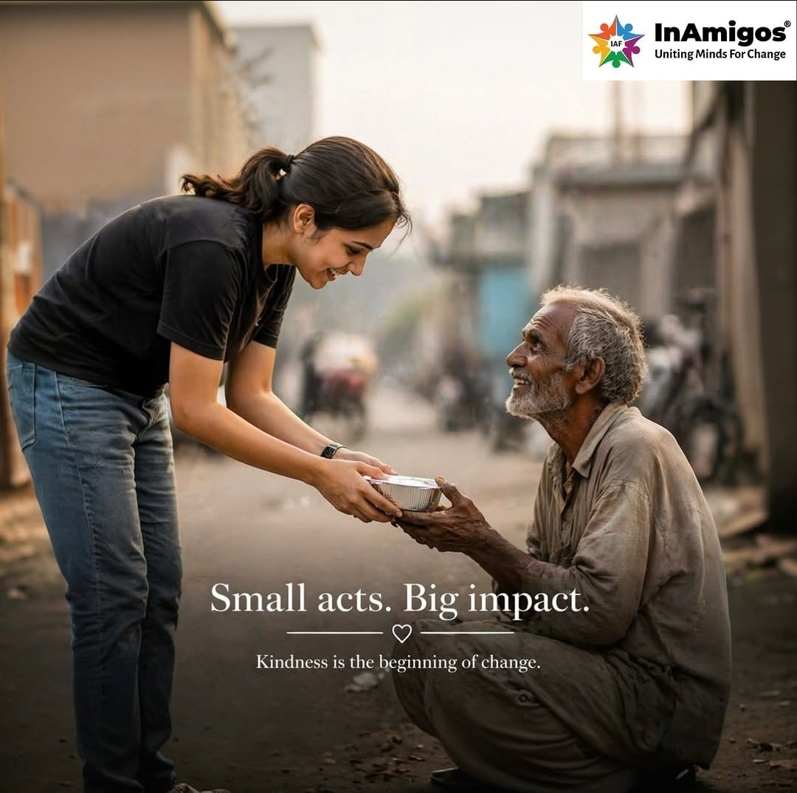
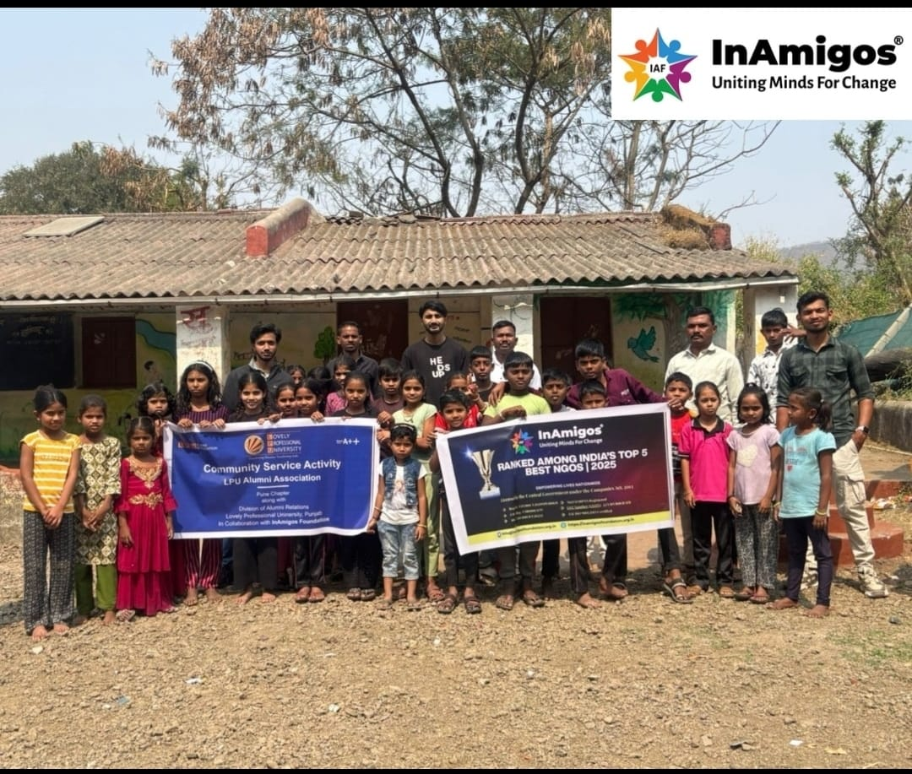
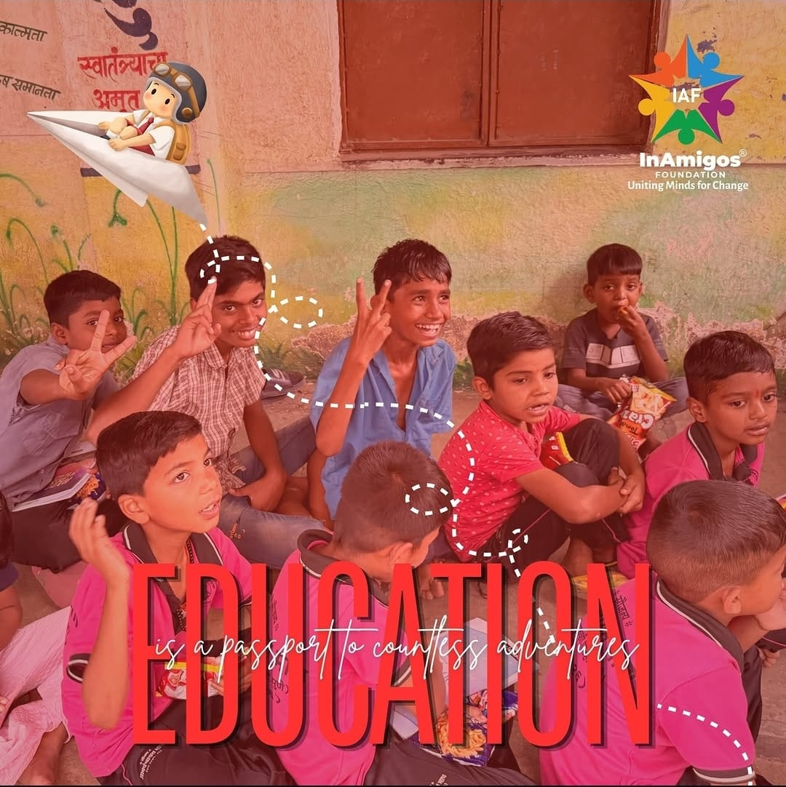
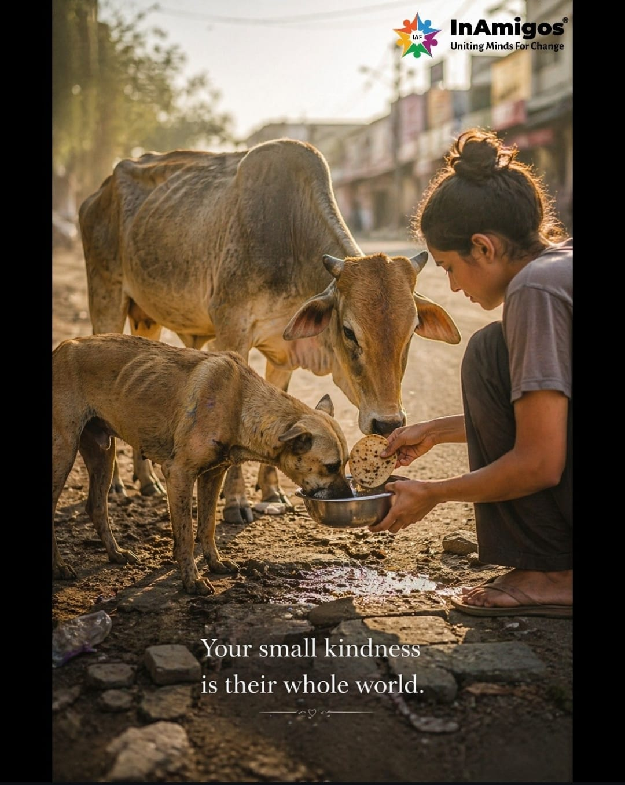
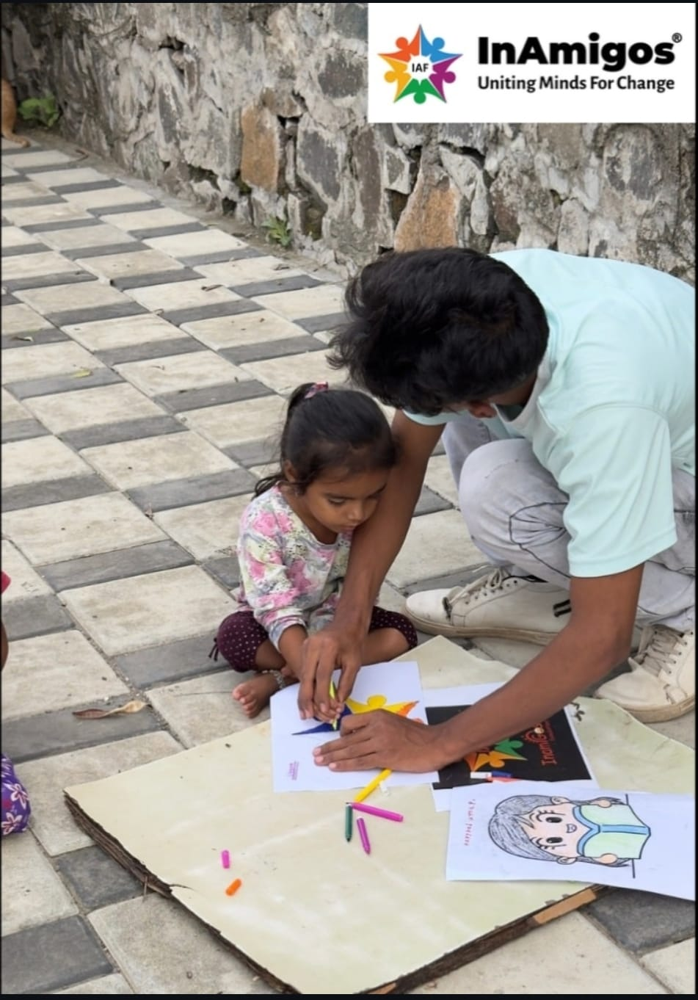
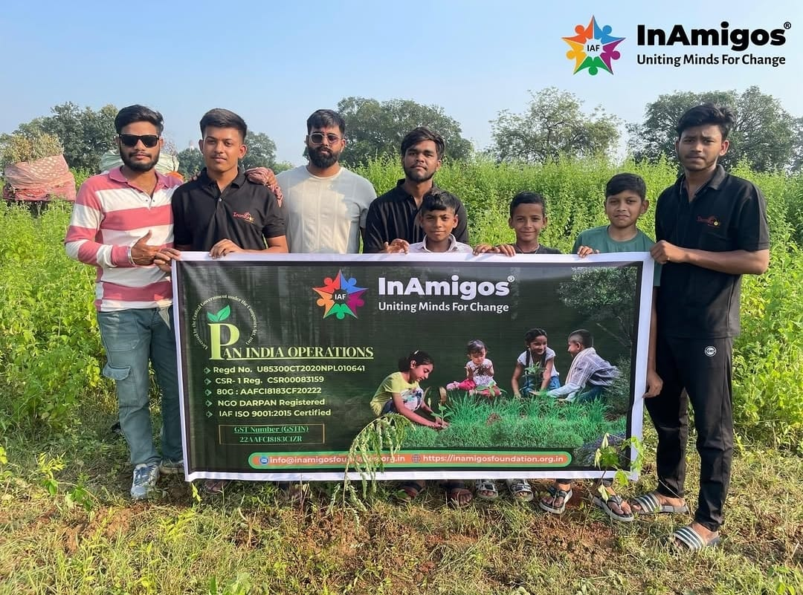
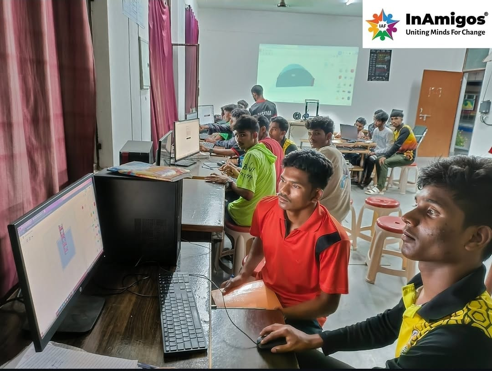

Our Mission
To bring positive change through food security, education, empowerment, animal welfare, and environmental action — reaching communities that need it most, with dignity and consistency.
InAmigos Foundation · Section 8 Non-Profit
From food security to education, animal welfare to the environment — InAmigos Foundation turns small, consistent actions into real impact for the communities that need it most.

Who we are and why we do what we do
InAmigos Foundation is a registered Section 8 non-profit organization committed to driving positive, lasting change in the communities we serve. We believe that meaningful impact does not come from grand gestures alone, but from consistent, grounded action — one meal, one classroom, one rescued animal, one trained hand at a time.
Our work spans several critical areas of need: humanitarian relief, education for underprivileged children, animal welfare, women's empowerment, environmental conservation, and youth employability. Each initiative is designed and run with the same core intent — to create an inclusive, compassionate, and empowered society through collective action.
The purpose that drives our work
To bring positive change through food security, education, empowerment, animal welfare, and environmental action — reaching communities that need it most, with dignity and consistency.
A more inclusive, compassionate, and empowered society, driven by collective action — where every individual has access to opportunity, support, and a fair chance to thrive.
Six initiatives, one shared purpose

50,000+ MealsRegular food and clothing drives for underserved communities, ensuring no one goes without a meal or basic warmth.

Free education, books, and mentorship for underprivileged children, giving them the tools to build their own future.

Rescue, treatment, and care for stray and injured animals, giving voiceless lives a second chance.

Skill development and livelihood training programs that help women build independence and financial confidence.

20,000+ TreesTree plantation drives and environmental conservation efforts aimed at building a greener, more sustainable future.

Employability and vocational training programs designed to help youth gain real, market-ready skills.
"Every initiative we run is rooted in a belief — that small actions, multiplied, change lives."
Whether it's your time, your skills, or your support — there's a place for you at InAmigos Foundation. Join us in building a more compassionate and empowered society.